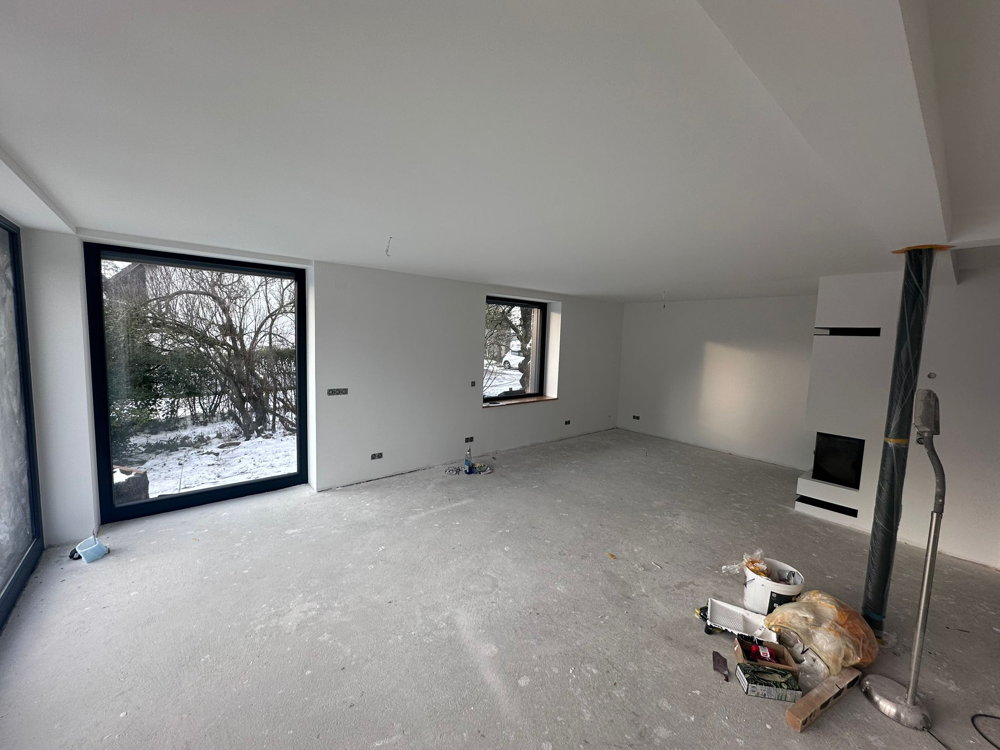

Von der Einzelzimmer-Renovierung bis zur kompletten Wohnungsrenovierung – wir übernehmen alle Gewerke aus einer Hand. Böden, Bad, Trockenbau, Malerarbeiten. Ein Ansprechpartner, kein Organisationsaufwand für Sie.
Rustemaj Dienstleistungen übernimmt Renovierungsprojekte in Stockach, Singen, Radolfzell, Überlingen und Konstanz. Als inhabergeführter Betrieb sprechen Sie direkt mit dem, der baut – keine Hotline, keine Übergabe-Verluste, kein Koordinationsaufwand für Sie.
Ob Mietwohnung zwischen zwei Mietern, Eigenheim nach dem Einzug oder komplette Kernsanierung: Wir erstellen Ihnen ein transparentes Festpreisangebot und halten es ein. Ohne Nachkalkulation, ohne Überraschungen.
Verlegen von Fliesen, Laminat, Parkett und Vinylböden. Estricharbeiten, Bodenausgleich, Trittschalldämmung. Sauberer Anschluss an Türen und Wände.
Komplette Badrenovierungen: Fliesen, Sanitär, Wannen- und Duschumbau, bodenebene Dusche, Abklebung und Versiegelung. Komplett aus einer Hand.
Wände, Decken, Schallschutzwände, Vorsatzschalen, Unterkonstruktionen. Schnell, sauber, maßgenau – für Wohn- und Gewerberäume.
Innenputz, Spachtelarbeiten, Wandfarben, Rollputz und Strukturoberflächen. Vorbereitung und Anstrich in einem Durchgang – kein zweimaliges Einrichten.

Zwischen zwei Mietern zählt jeder Tag. Wir kennen das – und bieten Vermietern und Hausverwaltungen in Stockach und der Bodenseeregion schnelle, zuverlässige Komplettrenovierungen zu Festpreisen.
Übergabe-Protokoll, Fotos vor und nach, saubere Rechnung: Alles was Sie für den nächsten Mieter brauchen. Sprechen Sie uns an – wir haben oft kurzfristige Termine.
Wir kommen zu Ihnen, nehmen alle Maße und verstehen was Sie möchten.
Innerhalb von 48 Stunden erhalten Sie ein schriftliches Angebot mit klaren Positionen.
Wir planen den Starttermin nach Ihren Wünschen und dem Projektumfang.
Unser Team arbeitet strukturiert und hält Sie täglich auf dem Laufenden.
Gemeinsame Abnahme, Restarbeiten sofort, Rechnung erst nach Ihrer Zufriedenheit.
Das hängt vom Umfang ab. Eine Badsanierung beginnt ab ca. 5.000–8.000 €, ein Bodenbelag ab ca. 30–60 €/m² inkl. Verlegung. Wir erstellen Ihnen nach einer kostenlosen Besichtigung ein verbindliches Festpreisangebot ohne versteckte Kosten.
Ja – wir übernehmen sowohl Einzelzimmer (Bad, Küche, Wohnzimmer) als auch komplette Wohnungen. Kein Auftrag ist zu klein.
Eine typische Wohnungsrenovierung (80–120 m²) dauert je nach Umfang 2–5 Wochen. Wir nennen Ihnen nach der Besichtigung einen verbindlichen Zeitplan.
Ja – wir arbeiten regelmäßig für Vermieter, Hausverwaltungen und Immobiliengesellschaften in Stockach und der Region. Schnelle Abwicklung, transparente Dokumentation.
Ja, wir sind in der gesamten Bodenseeregion tätig. Rufen Sie uns an oder schreiben Sie uns per WhatsApp.
Kostenloses Erstgespräch und Besichtigung. Festpreisangebot innerhalb von 48 Stunden. Wir melden uns noch am selben Tag zurück.